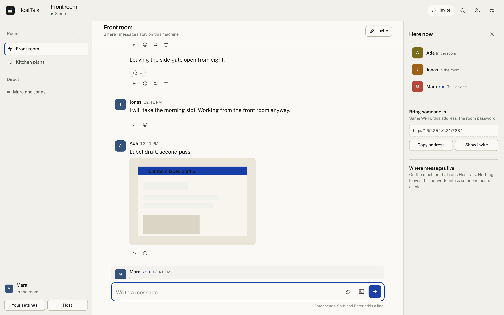
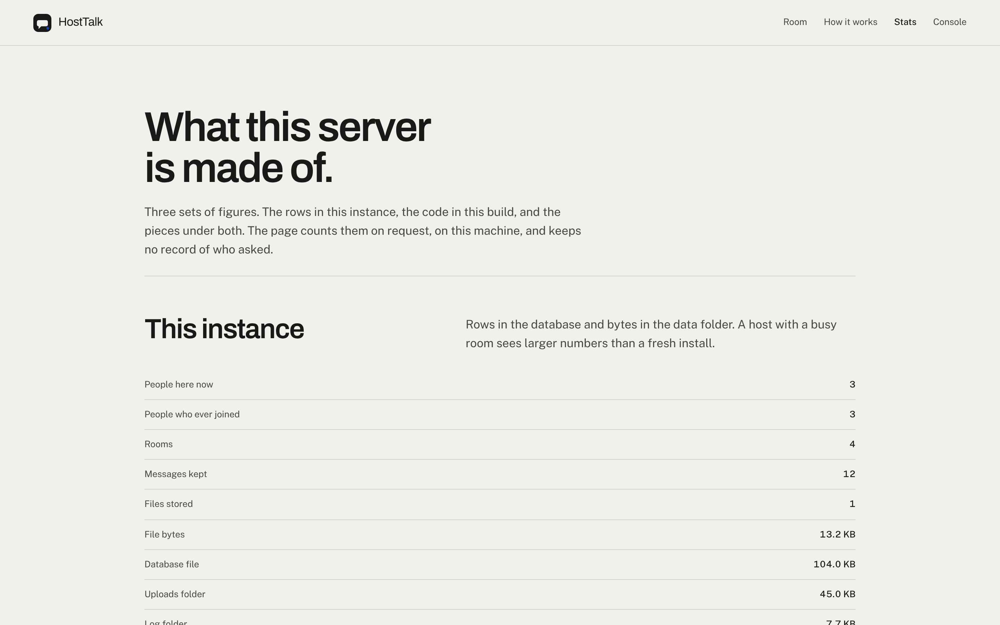
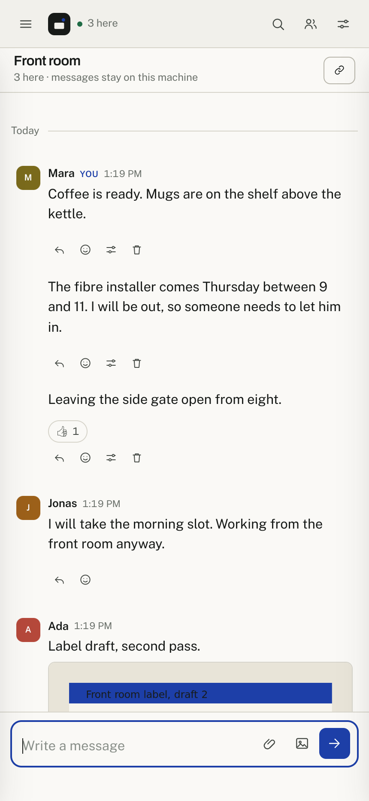
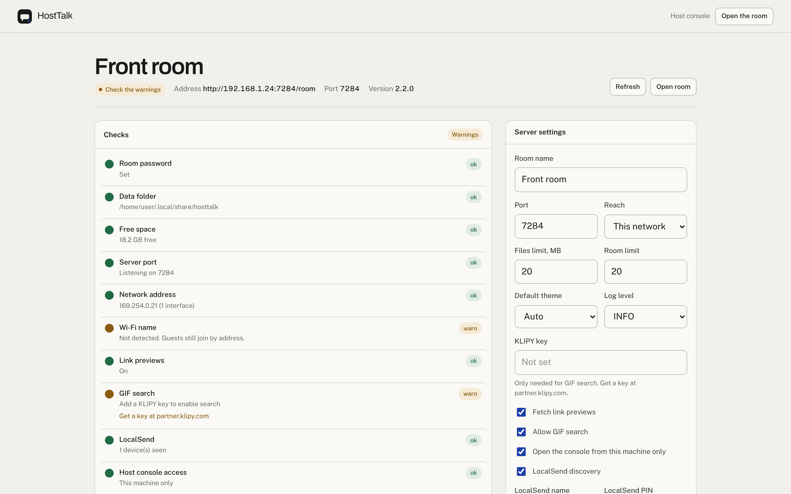

A room for the people on your network.
HostTalk runs on one machine in the building. Everyone on the same Wi-Fi opens a browser, picks a name, and joins. Messages, files, and logs stay on the host.
Free to run. Apache 2.0. No account, no server bill.

Room chat, with the parts a small group needs.
One server runs the rooms, the files, and the host console. There is no second service to install and no account to create.
One room, or several
The main room holds everyone. Named rooms hold up to 20 people. Direct threads stay between two.
Messages stay on the host
Every message lands in a SQLite file on the machine that serves the room. No relay, no cloud copy, no analytics.
Files up to 20 MB
Images show in the thread. Other files download. The browser shrinks an oversized photo before upload.
Quotes, reactions, edits
Reply with a quote, add a reaction, edit or delete your own text. A deleted message leaves a quiet placeholder.
A console for the host
Checks, people, rooms, logs, settings, and a stop button, in a browser. The console answers on the host machine only by default.
Files from phones
LocalSend devices on the same network send files straight into the room. No cable, no cloud drive.
Link previews, guarded
The host fetches a page title and image when someone posts a link. Requests to private addresses are refused before any request leaves the machine.
GIF search, when you add a key
Search runs through the host, so the GIPHY key stays on the server. Search is off until a key is set in the console.
Three steps, one machine.
The server serves the app, checks the room password, stores each message in SQLite, and pushes new messages to open browsers over one long-lived connection.
-
One host
A laptop, desktop, or small server starts HostTalk. The app, the database, and uploaded files live on one disk.
-
Same Wi-Fi
A guest opens the address and enters a name plus the room password. The browser holds a signed session cookie.
-
Stored here
A message is written to the database and streamed to every open browser. No third-party service carries the text.
The repository notes cover the request path, the schema, the session model, and the file guard in more detail.
Two commands on the host.
Python 3.10 or newer. No build step, no database server, no Node toolchain. The setup screen opens in a browser on the machine which runs the server.
From source
python -m venv .venv
source .venv/bin/activate
pip install -r requirements.txt
python server.pyOn Windows use .venv\Scripts\activate. The console then opens at http://127.0.0.1:7284/console.
Other ways to start
| systemd | Unit file and installer in deploy/. |
|---|---|
| launchd | Plist for a login session on macOS. |
| Docker | Image and compose file with a fixed data volume. |
| Windows | Batch launcher for a desktop shortcut. |
| Proxy | Caddy and nginx examples with the stream settings that matter. |
Each option is documented in the repository.
Every figure on the server is countable.
The app ships a stats page. It counts rows in the database, bytes in the data folder, lines of code in the build, and the versions under both. The page reads those figures on request and keeps no record of visitors.

No message text, names, or addresses appear on the page. Nothing is sent anywhere.
What it does not do
These limits are part of the design. Knowing them makes the tool easier to trust.
- No accounts
- A name and a device key hold your place. Someone with the room password on a new device picks a name and joins. The host keeps a log of name changes.
- No end-to-end encryption
- Traffic is plain HTTP inside the local network. The machine hosting the room stores message text in SQLite and reads it. Run HostTalk on hardware you control.
- No relay across networks
- Guests outside the Wi-Fi need a VPN or a tunnel you set up. HostTalk does not offer one, and it does not reach the internet to deliver messages.
- No cloud backup
- Copy the data folder to back up messages and uploads. Clearing a room in the console deletes its messages for good.
- Third-party requests are explicit
- A GIF search sends the words to GIPHY. A link preview fetches the page from the host. Nothing else leaves the network unless you post a link.
On a phone and in the console
The room fits a phone without a separate app. The console gives the host one screen for checks, settings, logs, and people.

